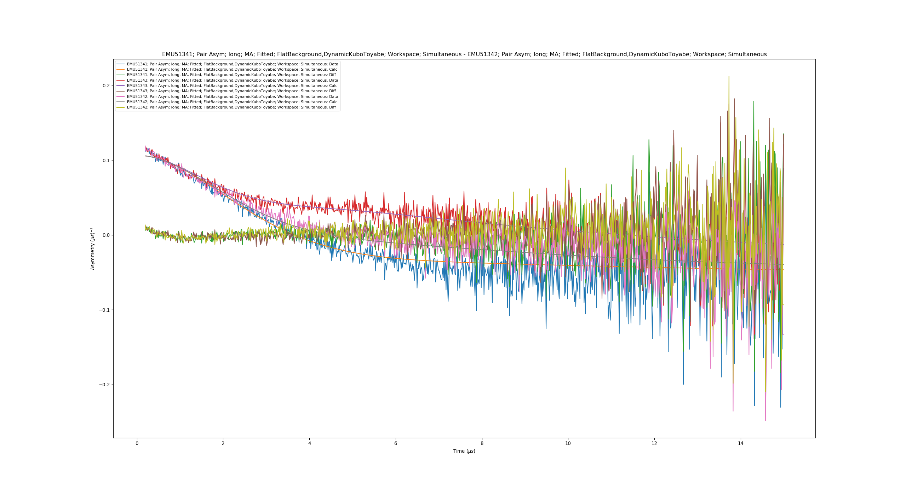
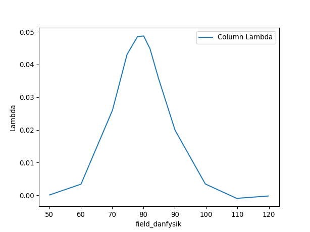

Muon Unscripted Testing: EMU#
Introduction#
These tests are for the EMU instrument at ISIS. This section will show some advance fitting and plotting features of the GUI. It would be worth closing the muon GUI and clearing the ADS before doing the second test. This is to give a clean state so it is easier to find the correct results table.
Ionic Diffusion Test#
Time required 5 - 10 minutes
Open Muon Analysis (Interfaces > Muon > Muon Analysis)
Change Instrument to EMU, found in the Home tab
Load runs
51341-3- Go to the Fitting tab
Check the Simultaneous fit over checkbox, and change from Run to Group/Pair
Right click the empty table area; Select Add Function
Add a FlatBackground (Background > Flat Background)
Similarly, add DynamicKuboToyabe (Muon > MuonGeneric > DynamicKuboToyabe)
Check the Global checkbox for the parameters A0, Asym, Delta and Nu
Set
A0 = 0.05,Asym = 0.15,Delta = 0.2andNu = 0.1Click the value for the Field parameter; A
...should appear next to it, click it. A new window should appearCheck the box called Log
Change the log to be field_danfysik
Click a row in the table
Click the Set drop down menu and choose Set all to log
The values should be roughly 0, 5 and 10.5
Do the same but this time choose Fix all, then click Ok
Click Fit
- Expected Values are (similar to within 50%):
f0.A0:
-0.0467f1.Asym:
0.155f1.Delta:
0.389f1.Nu:
0.474
Tick
Plot Differencecheck boxIn the plotting window click the
External PlotbuttonYou should get a plot that looks like the following:

- Go to the Fitting tab
Remove the
DynamicKuboToyabefunctionUncheck the Simultaneous fit over checkbox
Press fit
Tick the
Exclude Rangeoption in the tableEnter values of 0 to 6
Press fit, notice that the fit line moves to lower y values
Superconducting Copper Test#
Time required 5 - 10 minutes
To use the Model Fitting tab see the Muon Feature Flags documentation. You will need to set model_analysis:2 before opening Workbench and starting this test.
Open Muon Analysis (Interfaces > Muon > Muon Analysis)
Change Instrument to EMU, found in the Home tab
Load run
20889-20900- Go to the Fitting tab
Right click the empty table area; Select Add Function
Add ExpDecayMuon (Muon > MuonGeneric > ExpDecMuon)
- Go to the Sequential Fitting tab
Click Sequentially Fit All
- Go to the Results tab
At the bottom of the interface, click Output Results
Notice that the text for the output button is now in red (to warn the user they will overwrite it)
Change the name to “Results2” and it will turn black again
Above the log values table is a case sensitive search bar
Add the “run_number” and “Field_Danfysik” logs by ticking them
Click Output Results
- Go to the Model Fitting tab
In the
Results tablecombobox you will see that two options are listedPick “Results2”
Set the
Select Datato “Field_Danfysik” and “Lambda”The plot will look similar to the one below (but a scatter plot)
Add a peak function (e.g. Gaussian)
Move the peak centre to around 79
You should be able to fit to the data
Pressing the
Covariance Matrixbutton will give a pop up containing itTicking the
Errorsbox below the plot will show the error bars on the data along with a shaded regionChange
Plot guess usingto “Uniform points across data range”Tick
Plot guess, a smooth curve will appear
The x and y values below the plot can be used to zoom in on specific regions of the data
